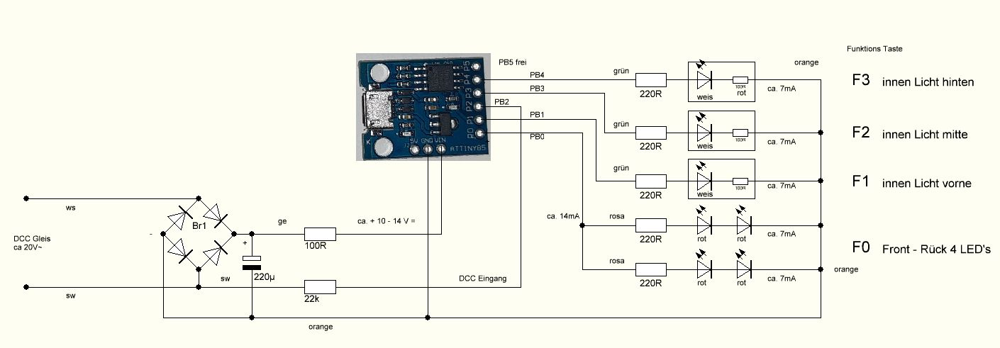

für die Wagenbeleuchtung verwende ich einen Arduino ATtiny85 als DCC Decoder, welcher mit einer Lok Adresse und den Funktionstasten F0, F1 - F3 die LED's ansteuert.
Erweiterung der Arduino IDE Einstellungen um Zusätzliche Boardverwalter-URLs: http://digistump.com/package_digistump_index.json
Arduino IDE Board Auswahl: Digispark (Default - 16.5mhz)
Benötigt wird die Bibliothek: DCC_Decoder.h in der Version 1.4.2,
DCC_Decoder.h neuere Versionen funktionieren nicht mehr.
(externer Link)
Den Inhalt von NmraDcc-1.4.2.zip nach C:\Users\Username\Documents\Arduino\libraries\ kopieren und nicht durch die IDE aktualisieren lassen.

mein DCC Funktionsdecoder Sketch für den ATtiny85
DCC_ATtiny85.zip (aktualisiert 02.2024)
gute Info:
Wolles-elektronikkiste.de Digispark – die bequeme ATtiny85 Alternative (externer Link)